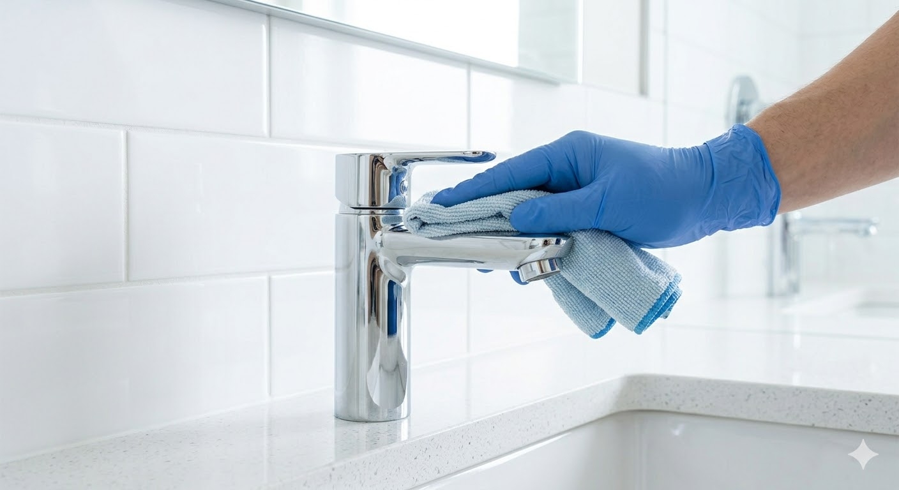

While weekly tidying and standard cleaning keep your home looking good on the surface, a regular deep clean is crucial for maintaining the health and longevity of your living space.
Dust mites, pet dander, and pollen love to hide in places you might not clean every week—like deep within carpet fibers, on top of ceiling fans, and inside window tracks. Deep cleaning systematically targets these overlooked areas, significantly improving your home's air quality.
Grime and buildup aren't just unsightly; they can actually be damaging. Hard water stains can etch glass, and grease build-up can damage kitchen cabinets. By thoroughly scrubbing these areas during a deep clean, you protect your home's finishes and extend their lifespan.
Ready for a total home rejuvenation? Discover what's included in our Deep Clean service.